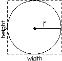
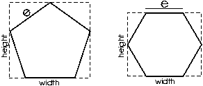
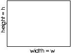
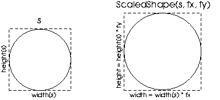
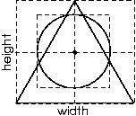
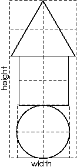

Project 3: JPS, A Java To PostScript Translator
6.005 Elements of Software Construction
Spring 2008
Due: Thursday, March 20 and Thursday, March 27
PostScript is
a programming language designed primarily for describing the layout of
printed pages. A PostScript program (stored as text files with the
extension .ps) is interpreted by a viewer (such as Ghostview).
Interpreting a program results in a set of strokes drawn on the page
(either on your screen, or on real paper in the printer). PostScript
programs can also be translated into other popular page layout formats
such as PDF and Word. For a brief history of PostScript, see this wikipedia
article. If you're interested in learning the difference between
PostScript and PDF, Adobe published an article on
the subject.
In this project, you will implement a Java library that we will
call JPS, short for "Java to PostScript."
JPS will allow its user to specify drawings at a high level of
abstraction, and output the drawings as PostScript. JPS consists of:
A shape language that allows basic shapes such as squares, circles, and polygons to be
defined, rotated and scaled versions, and aggregate shapes, for example a vertical "stack".
A shapes-to-PostScript translator that takes as
input a drawing specified using JPS's shape language and produces a
PostScript file from it.
The purpose of this project is to help you develop your understanding
of programming with immutable datatypes, and viewing a datatype (or collection
of datatypes) as a kind of language. In designing and implementing the transformations
on the PostScript commands, you'll get practice using the design patterns that we've been
teaching, such as Visitor and Interpreter.
Shape language
The JPS shape language relies on the following fundamental notions:
Bounding box. Every shape has a bounding box:
an imaginary rectangle that encloses the shape. Bounding
boxes are not drawn.
The height (width) of a shape is the height (width) of its
bounding box. Bounding boxes are shown below using dotted lines.
Current point. The current point represents the
coordinates of the current location of the cursor. In PostScript,
these coordinates are given by the command currentpoint. A
shape is drawn so that its bounding box is centered around
the current point. The center of an bounding box is shown below as
a small black circle.
Units. Postscript's basic unit of measurement is 1/72 of an inch.
When referring to lengths below (e.g. radius, width or height), we are assuming this
measurement system. For example, if a shape has a height of 36, that means 36 units, which is
36/72 = 1/2 inch.
JPS is based on a language of immutable shapes, that are either basic or compound.
Basic shapes
Basic shapes are primitive shapes that can be
created without reference to any other shapes.
Circle(double radius). Creates a circle with the given radius.
The height and width of a circle are both 2*radius.

Polygon(int numSides, double sideLength).
Creates a regular polygon with the given number of sides, each of the given length,
oriented so that its lowermost side is
horizontal.

Rectangle(double width, double height). Creates a rectangle
of the given width and height.

Spacer(double width, double height). Like a
rectangle, but without drawn borders. A spacer is not visible on
the page.
Square(double sideLength). Equivalent to Polygon(4, sideLength).
Triangle(double sideLength). Equivalent to Polygon(3, sideLength).
Compound shapes
Compound shapes are shapes that are constructed from one or more other shapes, which
may themselves be basic or compound.
Rotated(Shape shape, RotationAngle rotationAngle). Takes a
shape and a rotation angle, which is either 90, 180 or 270 degrees.
Creates a version of the shape that is rotated counterclockwise by the
specified number of degrees around the origin of its bounding box. If
the rotation angle is 90 or 270 degrees, the height (width) of the resulting
shape is equal to the width (height) of the original shape.
Scaled(Shape shape, double fx, double fy). Takes a shape,
a horizontal scaling factor fx, and a vertical scaling factor fy.
Creates a version of the shape that is scaled horizontally and vertically
by the given scaling factors.

Layered(Shape... shapes). Given a collection of shapes,
creates a new shape consisting of all the shapes drawn with their
bounding boxes centered around the current point. The height and width
of a layered shape is the maximum of the heights and widths of the component shapes.

Vertical(Shape... shapes). Takes an ordered collection
of shapes, and creates a shape structured as follows:
- Shape shapes[i+1]'s bounding box
is located directly above the bounding box of shapes[i],
and both bounding boxes are vertically aligned around
their center.
- The height of the resulting shape's bounding box
is the sum of the heights of the component shapes.
- The width of the resulting shape's bounding box
is the maximum width of the widths of the component shapes.

Horizontal(Shape... shapes). Takes an ordered collection
of shapes, and creates a shape structured as follows:
- Shape shapes[i+1]'s bounding box
is located next to (to the right of) the bounding box of shapes[i],
and both bounding boxes are horizontally aligned around
their center.
- The width of the resulting shape's bounding box
is the sum of the widths of the component shapes.
- The height of the resulting shape's bounding box
is the maximum width of the heights of the component shapes.
JPS to PostScript translator
JPS lets the user translate any shape into a sequence of PostScript
commands. The user can specify the name of the resulting
file. The resulting file is a legal PostScript file that can be
previewed on screen or printed on paper.
All your code in this project should use immutable datatypes. You will need use some mutable
types from the Java library for writing output to files, but should avoid mutation everywhere else.
- Prepare. Complete the lab.
- Design the shape language, expressing it as a collection of
recursive datatype definitions.
- Design your JPS, expressing your ideas using a class outline, a
module dependency diagram, and any additional explanatory text that
you feel is necessary. Explain the advantages and disadvantages of
your design by comparing it to at least one alternative, fleshing out
the alternative (with a class outline and MDD) to the extent
necessary to make your points clear and easily understood.
- Extend. Design two or more nice shapes of your own and generate PostScript from them. You'll probably want to write some
classes that build on the shape language. For example, you might implement a class Skylines that contains methods
returning
randomized skylines with the number/height/shape of buildings specified as
input arguments to the methods. Or you might implement a class Fractals
that creates some fractal figures with a recursion limit specified by the user.
These are just examples; it's entirely up to you. A prize will be awarded for the best shape.
- Implement your design of JPS.
- Test. Design and implement a test strategy for this project. In addition to the JUnit test cases themselves, you should give
a brief commentary explaining your strategy.
- Demonstrate. At your grading meeting, present your JPS to your TA. The presentation must include: (1) an overview and justification of the design choices, (2) a walk-through of the JPS, and (3) a demo of the postscript files.
- Reflect. Write a brief commentary saying what you learned from this experience. What was easy? What was hard? What was unexpected? Briefly evaluate your solution, pointing out its key merits and deficiencies. Was your design flexible and modular enough to allow easy inclusion of more features? How could you make it more flexible? Critique the specification of the shape language. Is the language
expressive enough to create interesting drawings? Are the shape abstractions
well-designed, or not? Do they make certain drawings easy/difficult to create?
If you were to design the shape language from scratch, what
would you do differently?
- Comment on your collaboration in your LNB, as outline in the LNB
guide online (here)
Package postscript.commands
The package postscript.commands in the Eclipse project includes a set of
classes that represent PostScript commands. These classes have very
little functionality in them -- they are little more than wrappers
that allow you to create commands and print out their string representation.
You may use these classes if you want to help generate a PostScript file.
The classes may contain more commands than you will use, or you may need
to add new commands not included.
There are two deadlines for this project.
On March 20, you will hand in a design document that includes:
- Your shape language.
- Your design analysis
You should both commit your design documents to your pair repository and put a hard copy in the LNB box for your section by 5PM on Thrusday.
On March 27 you need to hand in:
- Your implementation
- Your test suite
- Your design extensions
- Your reflections
- Your (individual) LNB comments
You should both commit your documents and code to your pair repository and put a hard copy in the LNB box for your section by 5PM on Thursday.
90% of your grade will be allotted to the design and implementation, and 10% to the example shapes you created.
Of the 90%, 30% will be allotted to the design of your recursive types and your design critique, 40% to the code
(half for structure and half for correctness), and 20% to the testing strategy and test cases.
- The standard way to structure an implementation of a language is to have a collection of classes
for representing the syntactic objects of the language (in this case, the shapes), and some visitors
that perform transformations with these objects. For JPS, these visitors might compute the width and
height of a shape, and convert a shape into a PostScript program.
- The "..." syntax in the compound shape definitions above is Java's
vararg construct.
Other Java constructs that you are likely to find useful in this project are
enumerations and
generic types.
- When implementing a visitor that generates a PostScript program, we found it useful to (1) assume, on
entry to each visiting method, that the point around which the shape is to be centered
has already been correctly set; and (2) for basic shapes, to draw the shape by starting
a new path, drawing, closing the path, and calling stroke; and (3) for some visitor methods,
to use gsave on entry and grestore before exit. These are only suggestions, however, and
you might find a different (and maybe better) approach.
The width and height of the bounding box for Polygon(n, e) is given by the following formulas:
- Case 1: n is odd.
height = e(1+cos(π/n))/(2sin(π/n))
width = (e sin(π(n-1)/2n))/(sin(π/n))
- Case 2: n is divisible by 4.
height = e(cos(π/n))/(sin(π/n))
width = (e cos(π/n))/(sin(π/n))
- Case 3: n is divisible by 2, but not by 4.
height = e(cos(π/n))/(sin(π/n))
width = e/(sin(π/n))
- In PostScript, use showpage to finally draw the current page and create a new page.
PostScript includes commands for drawing lines and arcs,
rotation, scaling, and abstraction via function definition. Why not
just create a library of PostScript definitions that a user can import
and call directly in PostScript? The answer to this question has two
parts. First, a library like JPS would come in very handy as a part of
a word processing or drawing editor written in Java. The developers of
such an editor could use JPS to implement an "export as PostScript"
functionality in the editor. Second, JPS's design separates the
shape language from its translation to PostScript, and this
separation would make it easily extendable so that it could produce drawings in
other target formats, different from PostScript.